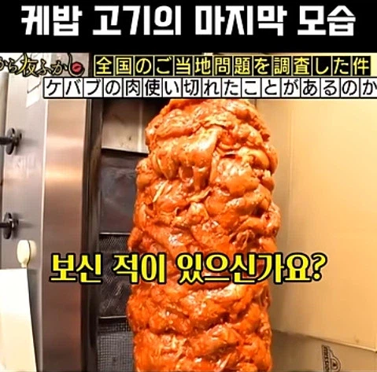
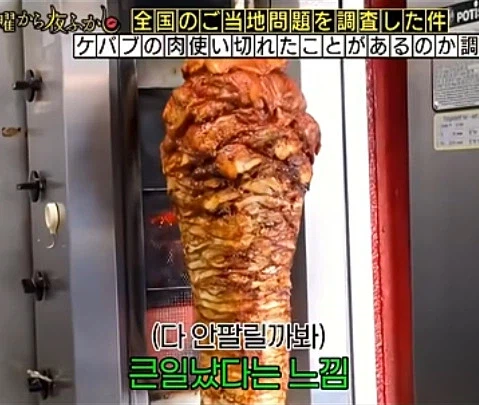
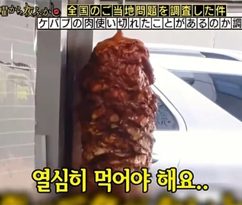
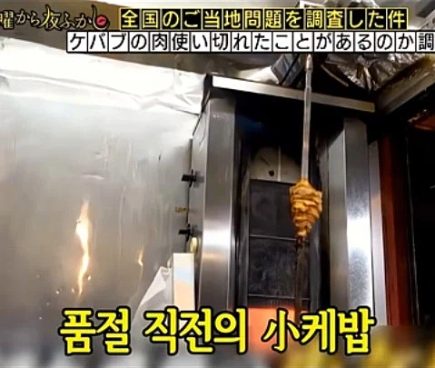

통풍걸리기 전에 도망가고 싶어!!




통풍걸리기 전에 도망가고 싶어!!
원칙은 그날 그날 다파는걸로 알고 있는데 요즘은 먹거리가 많아서 다 팔리려나 싶음
하루 물량 예측해서 꼽아 놓은거라 저거 크기로 식당이 맛집이냐 아니냐 알수 있었다던데
만들어놓은 케밥은 하루만에 다 팔아야하는데 양 적게 꼽아놓으면 우리 장사 잘 안됩니다 흑흑 이런 이미지라서 일단 크게 만들어야 한다더라
며칠
하루만에 다 팔긴 할거임. 그래서 퇴근시간쯔음해서 애매하게 남았을때 가면 사장님들 퇴근 못하고 앉아있음.
그럴때 달라고 하면 걍 ㅈㄴ 퍼줌.
꿀팁 ㄱㅅ
케밥이랑 통풍이랑 뭔 상관임?
고기 너무 많이 먹으면 통풍올걸?
저 정도로는 문제없을텐데
그리고 통풍은 유전적 영향이 커서 뭐
통풍도 유전병이었어?
유전적 영향이 크다고 하더라고
식이요법으로는 20%정도인가 효과 있는거고
그냥 고기 존나 쳐먹고 맥주먹어도 멀쩡한 놈은 멀쩡한거고 요산수치 높아도 괜찮은 놈은 또 괜찮고
결국 통풍있다하면 식이요법하면 좋겠지만 일단 평생 약 먹으면서 관리해야됨
근데 통풍이 존나웃긴게 또 약 안먹어도 나아지다가 악화되다가 반복해서 안 아플 때 약 끊는 경우가 존나 많아서 악화되는 경우가 많대
물론 그렇다고 약 먹으면서 맥주 쳐마시고 하라는건 아니지만 식이로는 한계가 명확한 유전적인 영향이 큰 병이다 뭐 그말하고 싶은거임
20퍼면 존나크긴하네
난 약먹으면서 맥주 튀김 존나 쳐먹는중
사실 뭐 약이라도 잘 챙겨먹는 환자가 어디냐더라 ㅋㅋ
모든 병은 유전형질이 절반이상 먹고 들어가는데 통풍도 그중 하나임
요컨데 아버지 어머니와 바로 그 위 할머니 할아버지가 암이 없으면 생활습관 개판이어도 암 발생율이 암으로 돌아가신 가계도 대비 -90%이상 줄어듦
미국에서 평생 닥터페퍼먹고 당뇨도 안걸리는 90넘은 할머니 계속 닥터페퍼 먹는데도 장수한 케이스가 집안 내력에 병이 아예 없음 전부 노화로 인한 자연사+장수
이정도 집안이면 병을 막고 수명을 연장시키는 특정 유전자 패턴이 있다고 함 소위 "엘리트 유전자" 라고 부른다데
내 기대수명 보려면 할아버지 언제 돌아가셨는지 보고 +5~10년하면 된다고 봄
뭘 해도 건강한 인자강유전자/어떻게 관리해도 병걸리는 개복치유전자는 소수임. 그 중간에 있는 대부분은 생활습관이나 환경 영향도 상당히 중요함.
내말은 죽어라 식이요법해도 한계가 명확한게 통풍이라는 거임.
마치 우리나라는 맥주 안 마시고 고등어 안 먹으면 나을 수 있거나 관리되는 병처럼 묘사되니 쓴 댓글이야.
운동 식이요법 다 좋지 근데 영향끼치는 절대값이 유전인데 이걸 이겨먹으려고 난 맥주 안 먹고 붉은 고기 안 먹으니 하면서 생쇼하다가 약 안 먹고 악화되니 안타까워서 하는 말임
다시 말하지만 그렇다고 약처먹고 술 마시란게 아님. 환경 식이습관 다 중요하지만 유전적인 영향이 크니 받아들이고 약 먹으라는거임.
마치 1형 당뇨병 환자보고 환경 식이습관도 중요한데 인슐린 맞아야 산다고 말하는거랑 똑같음
당연히 이미 걸렸거나 위험군이면 약맞는게 맞지 생활습관이 중요하다 = 병 걸려도 약 먹을필요없다 가 아님
매일 3끼 x 13년을 먹었다는데 저 정도로는 문제없다고 하면 그냥 고기랑 통풍이랑 상관관계가 없는거 아니냐
통풍의 기전을 생각한다면 상관관계가 있으나
사실 유전빨이 큰 병이라(마치 1형 당뇨처럼) ㅎㅎ
웬만해서는 저정도 먹는다고 문제 생기지는 않지 아저씨봐도 뭐 존나 뚱도 아니고
붉은고기니까
당신도 기립하시오!
'우리의' 고기구나
혁명고기라니 훌륭하잖아
악덕한 지주의 기름진 뱃살이오
잘처먹고 산놈이라 기랜지 달구나야
송탄 미군부대앞에 케밥 존나 맛있는집 먹고싶다
양고기케밥 최고
1-2년에 한번쯤 가는데 갈때마다 케밥집이 조금씩 바뀌는거같음..
송탄 미군부대 앞은 돈찐이 인정한 록키즈 버거와 김네집
록키즈버거는 인정!
김네집은 가격 폭등으로 가성비가 아니게 됐음.(맛은 있는데 이젠 이가격이면 차라리...가 돼버림)
로컬은 김네집 보다는 숯고개감
나도 송탄 그 두개 인정 케밥은 록키즈 옆에 스타케밥만 먹엇었는데
이태원 다놀고 새벽에 집가기전에 케밥집 줄서있는게 맛도리거등
오 ㅋㅋㅋ 좀 아네
거기 요즘 맛 좀 빠짐 ㅜ
앙카라가 존나맛있었는데ㅠ
앙카라 케밥 킹케밥 미스터케밥 이태원케밥3대장 ㅠ
경기 남부권 케밥집 추천 받아요
집 주변에 케밥집이 없어 나도 먹어보고픈데
그래서 케밥 먹으러 가면 항상 고기를 푸짐하게 주는거구나
어릴때 계양구에 있는 그랜드마트에 가면 케밥을 팔았는데 그게 그렇게 맛있었으
살찌면서 통풍온 경우 많음... 살 빼면 통풍 사라짐
통풍은 사라지는게 아니다. 유리같은 결정이 네 몸에 떠다니면서 계속 혈관 조지고 있는거니까 발작 안온다고 방심하지 말고 약 먹어라 평생 안전해진다. 내 친구가 발작 안온다고 약 안먹다가 투석하는데 진짜 사람 할 짓이 아니다
요산결정은 몸이 없앨수있음
요산수치가 낮으면 그게 나은거임
참고로 다른 결정이나 요석도 작은건 마찬가지로 알아서 몸이 해결가능
내가 발붓고 요산수치 높았는데 1년 페브릭 먹으며 관리가 가능했지만 현상유지만 가능하고 개선은 아니였음
그래서 살빼고 식단바꾸고 비타민 cd 먹으며 페브릭정 안먹어도 요산수치 높아지지 않게 해결됨
양파 많이 넣은 케밥 땡기네... 내일 사먹어야지
케밥 퀴즈~
다 먹으면 다 먹은대로 리셋되잖아??
일본이면 그냥 덮밥으로 소진시키면안되나
케밥 이상하게 소화안됌
저게 하루에 다 파는걸까? 몇일동안 파는걸까